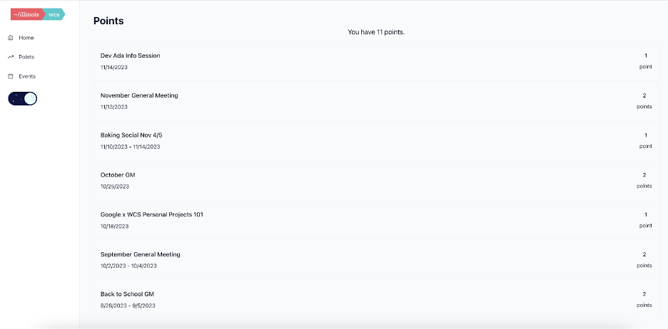
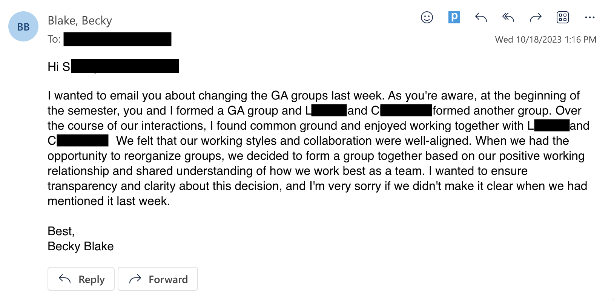

Social Skills
Embarking on a journey to enhance my social skills within the context of Women in Computer Science (WCS) was a deliberate and empowering choice. As an organization championing inclusivity, WCS provided an ideal platform for me to actively participate, attend events, and build a network, which I detailed in my personal development plan as a SMART goal.
One of the primary objectives of my SMART goal was to expand my network within WCS, and this was achieved through consistent and active participation. Attending general meetings and additional events opened doors to meeting diverse individuals who shared a common passion for computer science. Engaging in conversations during these gatherings allowed me to practice and refine my social skills, from initiating conversations to maintaining meaningful dialogues. Through this, I not only gained new friends but also a new confidence.
I also joined WCS’s Mentoring Committee, which provided a unique opportunity to contribute meaningfully to WCS. Collaborating with others, planning events, and being part of a team honed my collaborative and interpersonal skills. It was not merely about expanding my network but also about actively participating in the community, contributing my skills and ideas to create a positive and inclusive environment for everyone.
Participating in WCS required effective communication, whether it was articulating ideas during committee meetings or engaging in discussions with fellow members. The varied nature of events, from workshops to more relaxed social gatherings, allowed me to adapt my communication style to different contexts. I learned to convey my thoughts clearly, listen actively to others, and navigate group dynamics with finesse.
WCS, as an inclusive organization, provided a rich tapestry of diversity. Engaging with individuals from different backgrounds, experiences, and perspectives broadened my understanding of diversity in the professional sphere. Navigating this diversity required not only open-mindedness but also a heightened awareness of the nuances in communication styles and cultural differences—a valuable lesson in the intricate dance of social interactions.
My role in the Mentoring Committee was an immersive experience in leadership and teamwork. Collaborating with committee members, completing assigned tasks, and ensuring the smooth execution of events demanded a blend of leadership and social skills. Negotiating conflicting ideas, providing constructive feedback, and fostering a positive team environment contributed significantly to my growth in these areas.
While the journey was enriching, there were also some challenges. There were instances of navigating conflicting opinions, addressing logistical hurdles in event planning, and balancing personal commitments with active participation. These challenges became opportunities for growth, teaching me resilience, adaptability, and the importance of maintaining a positive attitude in the face of adversity.
Participating in Women in Computer Science not only fulfilled the objectives of my SMART goal but exceeded expectations by providing a transformative experience in developing social skills. The lessons learned extend beyond the professional realm, contributing to personal growth and a more nuanced understanding of human connections. As I reflect on this journey, I am grateful for the vibrant community that WCS represents and the opportunity it provided me to further develop my social skills.
Evidence: Participating in WCS events allows you to gain points. My points:
Self-Awareness
In thinking about emotional intelligence, self-awareness is one of the foundational components identified by Goleman, offering insights into our strengths, weaknesses, and the nuances that shape our responses to the world. My exploration of self-awareness took a significant stride after taking the Clifton Strengths Assessment. The revelation of my top strengths — discipline, deliberative, individualization, relator, and includer — became an important moment in my journey toward understanding myself more deeply.
The Clifton Strengths Assessment unveiled discipline as a core aspect of my personality. This trait is one I resonate with because I like predictability and structure in my life. In a world of messiness and change, I like to feel somewhat in control. I began to explore how this strength manifests in my daily life. Discipline, in my context, became a driving force behind my consistent engagement in various aspects of my academic and personal pursuits. Recognizing this strength allowed me to embrace it consciously, understanding how it shapes my work ethic and commitment to excellence.
The deliberative strength emerged as another facet of my self-awareness journey. This strength didn’t surprise me because I try to be very intentional with my actions. The assessment shed light on my inclination towards careful consideration and the thorough evaluation of options. This newfound awareness prompted reflections on how I approach decision-making and problem-solving. It encouraged me to appreciate the value of taking time to analyze situations, ensuring that my actions are well-thought-out and align with my goals.
I thought the strength of individualization was very interesting. After reading about this strength, I learned that it's the lens through which I perceive and understand the uniqueness of each person. This insight prompted a shift in my interpersonal interactions. I became more attuned to recognizing and appreciating the diverse qualities that make each individual distinct. This self-awareness enabled me to tailor my communication and approach based on the specific needs and preferences of those around me.
The strength of relator highlighted my preference for deeper, meaningful connections in my relationships. Understanding this aspect of myself allowed me to appreciate the importance I place on authenticity and shared experiences. It prompted me to nurture existing relationships and approach new connections with a focus on genuine connection rather than surface-level interactions. Throughout this semester, I consistently worked on fostering deeper connections with friends and family, utilizing many of the skills I’ve learned in this class.
One thing that surprised me was the includer them. I like to think I am very inclusive, but I think I get too reserved in social situations to actually be inclusive in practice. So reflecting on this theme, it became important in understanding my approach to teamwork and group dynamics. This strength underscored my natural inclination to ensure that everyone feels welcome and valued. This newfound awareness deepened my commitment to actually fostering inclusive environments, both personally and professionally.
The Clifton Strengths Assessment was not just a list of strengths but a mirror reflecting back the intricacies of my character. It explicitly listed out aspects of myself that were previously implicit. It provided a new vocabulary that allowed me to communicate my strengths more effectively, fostering a greater sense of self-awareness and aiding in introspection. While the strengths unveiled by the assessment are undoubtedly valuable, the journey of self-awareness also involves acknowledging areas for growth. Recognizing my strengths opened the door to understanding where they might pose challenges or limit my perspectives. This awareness became a catalyst for seeking growth opportunities, challenging myself to expand beyond my comfort zones. As I continue to navigate the realms of emotional intelligence, the lessons from this assessment serve as a compass, guiding me toward a more authentic and aware version of myself.
Evidence: My Clifton Strengths Report
Self-Regulation
The complexities of group dynamics often serve as an opportunity for the development and application of emotional intelligence, particularly in the realm of self-regulation. This reflection delves into a specific instance in my computer science class where I encountered challenges in working with a group member, S (who I will refer to by their first initial). The narrative unfolds through the lens of self-regulation, exploring the emotions, decisions, and communication strategies employed during this tumultuous period.
My computer science course required us to form groups to complete assignments in class. Group teams can have a maximum of 3 people, but I was working within a group of 4 (S, C, L, and myself). So our group had to split into 2 groups of 2: C and L were on a team together, and I was on a team with S. The first few weeks of working together revealed a stark disparity in my feelings toward the team members. While I resonated well with C and L, my interactions with S triggered annoyance and frustration. Acknowledging these emotions was the first step in recognizing the need for self-regulation. Understanding that my sentiments could potentially impact the collaborative process, I made a conscious effort to compartmentalize my feelings and focus on the task at hand.
The challenge escalated when we learned that we had the opportunity to form new groups for the rest of the semester. C, L, and I decided to form a group together, which meant S would have to find a new group.The subsequent hurdle was communicating the group change to S. Initial attempts, both through text and in-person, were met with silence and apparent misinterpretation. Self-regulation played a crucial role during these moments of frustration. Rather than letting irritation dictate my responses, I had to navigate the delicate balance of assertiveness and empathy in my communication.
As the situation unfolded, it became apparent that the message had not been fully understood by S. This led to a confrontation with the professor, a scenario that required a higher degree of self-regulation. Despite feeling the weight of the misunderstanding, I needed to approach the situation with a calm and collected demeanor. The emotional regulation skills developed over time proved invaluable in addressing the unintended consequences of the group reformation.
Recognizing the need for clarity, I sent an email to S in order to clarify the group's decision and attempt to convey the rationale behind it. This email required a delicate balance of firmness and diplomacy, which was only possible through deliberate self-regulation. It was crucial to express the decision clearly while also recognizing the emotional impact it might have on S.
This journey in self-regulation within the context of group dynamics provided numerous takeaways. It underscored the importance of separating personal emotions from professional obligations, the necessity of clear and empathetic communication, and the role of emotional intelligence in navigating complex interpersonal relationships. The experience illuminated the multifaceted nature of self-regulation and its instrumental role in fostering a positive and effective collaborative environment.
In retrospect, the challenges faced in this group project became an arena for the practical application of self-regulation skills. Navigating the emotional nuances of working with a challenging team member required not only a keen awareness of my own emotions but also a deliberate effort to regulate them in the interest of group harmony and project success. This experience has become a testament to the transformative power of emotional intelligence, particularly in fostering resilience and adaptability in the face of interpersonal challenges within academic and professional settings.
Evidence: screenshot of the email I sent
Empathy
During our Empathic Listening assignment, I tried to employ the empathic listening techniques I learned during class. Specifically, I had a crucial conversation with a friend while baking pumpkin cheesecake, which helped me explore the realm of empathy and its connection to emotional intelligence. Empathic listening is a multifaceted skill set, comprising reflective practices, open-ended questions, and mindful nonverbal cues.
In our crucial conversation, I aimed to delve into my friend's emotions and thoughts by consistently employing these empathic listening techniques. Reflecting content and feeling allowed me to acknowledge the subtleties in his anecdotes, while open-ended questions provided a pathway to explore the depths of his experiences. I made sure to maintain nonverbal cues, such as nodding and eye contact, reassuring my friend of my engaged presence.
The impact of empathic listening on the conversation's quality was significant. The techniques I used created an environment of trust, encouraging my friend to share more openly than he normally does. Reflecting content and emotions triggered a cascade of detailed narratives, enriching the dialogue. Conversely, moments of deviation led to subtle shifts in the conversation's dynamics, which slightly diluted the depth of connection.
In our conversation, empathy was the bridge connecting emotional intelligence to genuine connection. Through actually practicing empathic listening, I learned that empathy is not just about hearing words; it's about understanding the emotions, perspectives, and unspoken nuances underlying those words. The ability to reflect content and feeling, pose open-ended questions, and maintain nonverbal cues became the tools that facilitated this profound understanding.
The deviations from empathic listening were equally instructive. Sometimes I would input my own experiences into the conversation, which momentarily steered away from empathic listening. However, I think the shared experiences contributed to a sense of camaraderie and understanding between us. Distractions, on the other hand, highlighted the need for continuous focus and mindfulness in cultivating empathic connections.
Empathy is an important component of emotional intelligence. The journey into empathy during the conversation emphasized that emotional intelligence is not a static trait but a dynamic interaction of skills that can be honed and refined through intentional effort. Looking back, the empathic listening experience emphasized the reciprocity inherent in empathy, without the need to explicitly explain your own experiences. This journey laid the groundwork for continued exploration, acknowledging areas for growth and recognizing that empathy is a skill I will always be continuing to develop.
Evidence: Empathic Listening Assignment